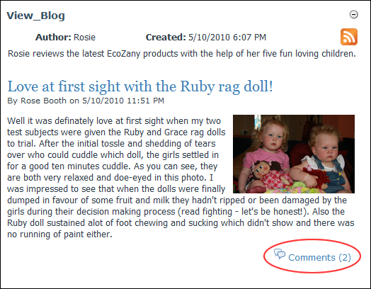
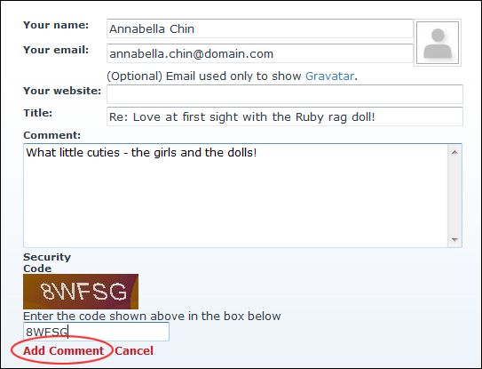

Adding a Blog Comment (Unauthenticated Users)
How to add a blog entry comment on the Blog module. Note: Comments may be disabled, may require approval or may use the CAPTCHA security code.
- Locate the required blog entry. See "Viewing Blog Entries for a Month", See "Viewing Blog Entries for a Single Date", or See "Viewing Recent Entries for a Single Blog".
- Click the Comments link located bottom left corner of the View_Blog module. This displays the comment entry section.

- In the Your Name text box, enter your name.
- In the Comment text box, enter your comment. Note: Basic HTML formatted may be permitted.
- Optional. If the Your Email text box is displayed, enter an email address to be used to show your Gravatar.
- Optional. In the Your Website text box, enter your website address. When your comments are published, your user name will include a link to this web site. Note: This field may not be displayed.
- Optional. In the Title text box, edit the comment title. Note: Editing of this field may be disabled.
- Optional. In the Security Code text box, enter the displayed security code.
- Click the Add Comment link.

- Optional. If comments require approval, this displays the message "Your comment MUST be approved by the blog owner BEFORE it is displayed on the web site. Do you wish to save your comment now?"
-
Tip: As an unauthenticated user you are unable to delete or edit your comments.